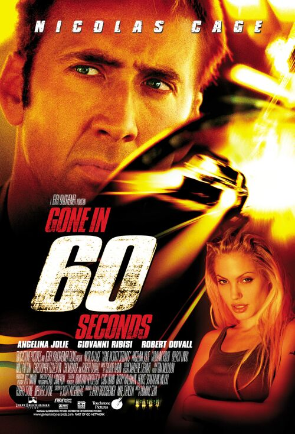

Muvies
300 spartans
- Genres:actions/fantasiy
- Release Date: 22 March 2007 (Russia)
- Storyline: In the Battle of Thermopylae of 480 BC an alliance of Greek city-states fought the invading Persian army in the mountain pass of Thermopylae. Vastly outnumbered, the Greeks held back the enemy in one of the most famous last stands of history. Persian King Xerxes led a Army of well over 100,000 (Persian king Xerxes before war has about 170,000 army) men to Greece and was confronted by 300 Spartans, 700 Thespians, and 400 Thebans. Xerxes waited for 10 days for King Leonidas to surrender or withdraw but left with no options he pushed forward. After 3 days of battle all the Greeks were killed. The Spartan defeat was not the one expected, as a local shepherd, named Ephialtes, defected to the Persians and informed Xerxes that the separate path through Thermopylae, which the Persians could use to outflank the Greeks, was not as heavily guarded as they thought.
Gone in 60 seconds

- Genres:actions/crime/thriler
- Release Date: 10 August 2000 (Netherlands)
- Storyline: Car theft in Long Beach went down 47% when Randall "Memphis" Raines walked away from the life. He gets dragged back into it by assuming the job his brother Kip screwed up for stolen-car broker Raymond Calitri: steal 50 exotic cars and have them on a container ship by 8 AM Friday morning, and he got this news on a Monday. With Calitri threatening to kill him and Kip, and the police GRAB unit breathing down his neck, Memphis reassembles his old crew and attempts to pull off the logistically impossible.
Green Mile

- Genres:crime/drama/fantasy/mystery
- Release Date:18 April 2000 (Russia)
- Storyline:Death Row guards at a penitentiary, in the 1930's, have a moral dilemma with their job when they discover one of their prisoners, a convicted murderer, has a special gift.
Schindler`s List
- Genres: biograhy/drama/history
- Release Date: 21 May 1994 (Russia)
- Storyline: Oskar Schindler is a vainglorious and greedy German businessman who becomes an unlikely humanitarian amid the barbaric German Nazi reign when he feels compelled to turn his factory into a refuge for Jews. Based on the true story of Oskar Schindler who managed to save about 1100 Jews from being gassed at the Auschwitz concentration camp, it is a testament to the good in all of us.